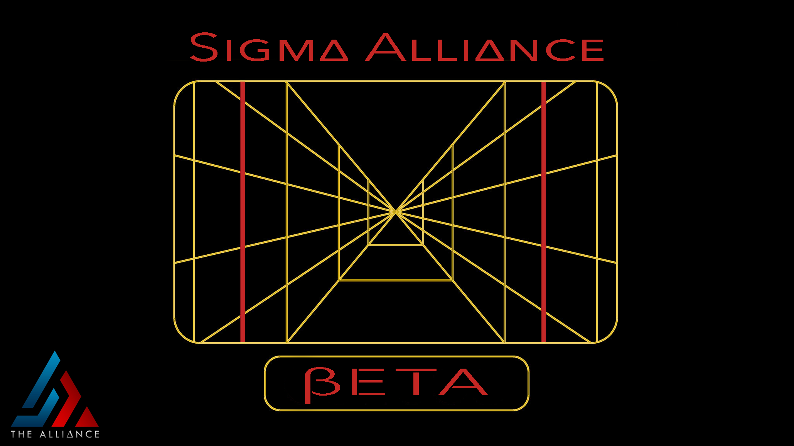

About Us
Beta was formed in August 2018 after multiple guilds from outside of SIGMA merged and joined The Alliance. This guild requires participation in all aspects of SWGOH, with an added emphasis on Territory Battles and the Heroic Sith Triumvirate Raid. Our guild reset is at 18:30 UTC.
GL: stiiillωaiting
Officers: Fred1138, Hawca, lunco, luxor2k, Oathkeepr, SnailAss, Spicewood Foo
Requirements
- Minimum 2.8 Million GP
- HSTR ready roster
- Required LS/DS TB Characters at required star level
Raid Info
hRancor Raid:
- Launch at 8pm UTC with a 24hr join period
- Zerg opens at 8pm UTC with no damage delay
hSTR & hAAT Raid:
- Launch at 7pm UTC with a 24hr join period
- Zerg opens at 7pm UTC with no damage delay
- hSTR & hAAT will never run on the same day. if, based on ticket accumulation, they are scheduled to run simultaneously hAAT will get pushed back 24 hours
Guild Events
Territory Battles
- Deployment remains locked until 9am UTC for every Phase
- Phases 4-6 begin with everything locked while TB Officers review platoon squads. Once instructions for filling squads are posted, platoons are opened and only after the assigned squads are all filled do Combat & Special Missions become unlocked
Territory Wars
- Follow Officer instructions for setting defenses and which opponent territories to attack
Guild Rules
Discord and Conduct
- Members must have access to Discord & check it daily
- Members must have a SWGOH.gg account
- Be Respectful and Polite Towards others.
- If you will be away from the game for an extended period of time, post in #leave_of_absence
Discipline
While warnings and strikes can be handed out for a number of infractions, Beta’s Discipline policy is currently under review and will be updated when finalized.
Tickets
- Achieving 600 Personal Raid Tickets daily is required.
Mercing
If you wish to offer yourself as a Raid Merc to another guild, you are allowed to do so but must get permission from an officer. It is very important that you achieve your 600 tickets before leaving the guild. If you will be away from the guild for more than 1 day, coordinate with an officer so that they can find an account to have cover your 600 tickets.